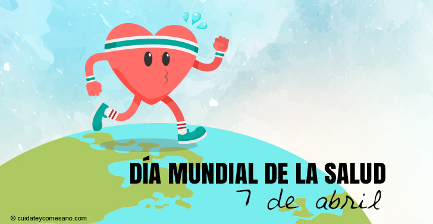

Dia mundial de la salud 7 de Abril
Infografia
Informacion sobre el dia mundial de la salud 7 de Abril
El 7 de Abril de cada año, el mundo celebra el Dia Mundial de la Salud. Para Conmemorar el aniversario de la fundacion de la organizacion Mundial de la Salud
- En 1948, la primera asamblea Mundial de la salud propuso que se estableciera un "Dia Mundial de la Salud" para asi conmemorar la fundacion de la OMS
- Desde 1950, todos los años el Dia Mundial de la Salud se viene celebrando cada 7 de Abril y se elige un tema de salud especifico a fin de destacar un area prioratoria de interes para la OMS
- La cobertura sanitaria universal(CSU) se logra cuando existe una firme determinacion politica. Ello significa garantizar que todas las personas:
- Puedan tener acceso a los servicios de salud escenciales y de calidad sin tener que pasar apuros economicos.
- Los paises que invierten el la CSU realizan una importante inversion en su capital humano
- En los ultimos decenios, la CSU ha surgido como una estrategia clave para avanzar hacia la concecuecion de otros objetivos relacionados con la salud y de desarrollo mas amplios


 1
1 2
2 3
3 5
5 6
6 7
7